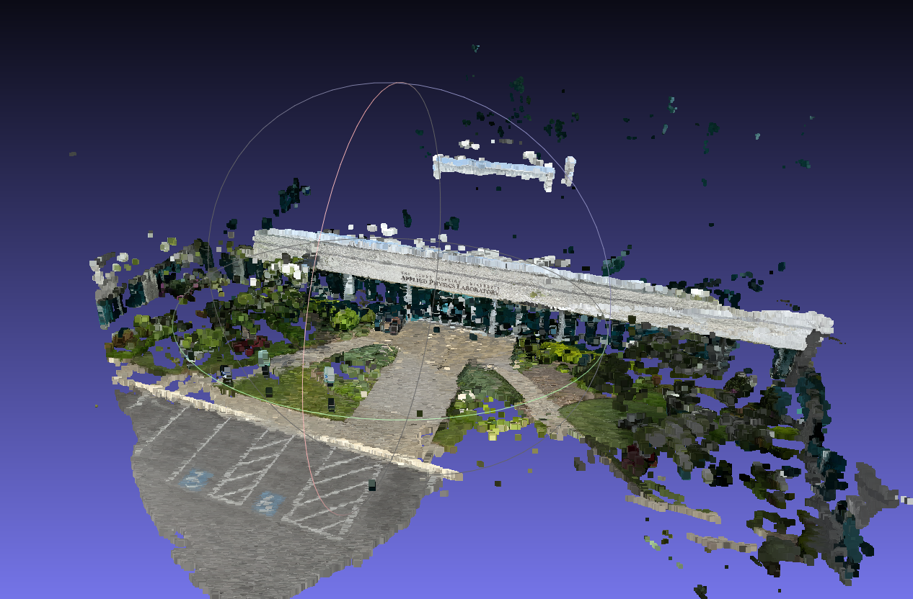
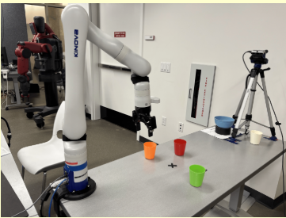

About
I'm a roboticist working at the intersection of robot learning, computer vision, and embodied AI. My research interests span Vision-Language-Action (VLA) models, world models, and 3D scene understanding. I'm particularly interested in how we can combine rich visual and multimodal representations with learning-based control to give robots robust manipulation and locomotion skills — especially in environments where uncertainty and real-world variability make traditional approaches difficult.
Currently, I'm pursuing an M.S. in Robotic Systems Development at Carnegie Mellon University, where I work on Physical AI, learning-based 3D vision, robot manipulation, and autonomous systems. Long term, I want to build general-purpose embodied AI systems that can learn complex skills, adapt to new environments, and operate reliably in the real world.
I'm always happy to connect with people working in robot learning, embodied AI, humanoid robotics, computer vision, and Physical AI. If you're a student exploring robotics, ML, or graduate school, feel free to reach out — we can set up a brief conversation. If you're working in a lab or research group on embodied intelligence and see opportunities to collaborate, I'd love to hear from you. I'm currently looking for full-time opportunities in robotics and machine learning starting mid-2027. Reach me at farnazaa@andrew.cmu.edu.
Experience
Agility Robotics
Jun 2026 – Aug 2026AI Intern · Pittsburgh
- Built the gripper-to-policy data pipeline for humanoid Digit around a Universal Manipulation Interface (UMI)-style handheld gripper — a portable, camera-and-IMU-equipped device that lets demonstrations be recorded by hand in seconds rather than through teleoperation — converting its multimodal MCAP recordings into Learning-from-Demonstration datasets, with QA validation and retargeting onto the real robot.
- Trained flow-matching manipulation policies with a ResNet visual backbone on this data, adapting the policy architecture specifically for handheld-only datasets, and deployed the resulting policies on Digit for tote manipulation, block manipulation, and shelf-stocking tasks.
- Tuned an RL-based whole-body controller to track this dataset's manipulation policy commands, coordinating arm and locomotion behavior for stable execution on the physical robot.
- Contributed to the in-house team building Agility's own UMI-style handheld data-collection gripper.
Bharat Electronics Ltd.
Oct 2022 – Jul 2025R&D Engineer, Radar Systems · Bangalore
- Led end-to-end design, qualification, and integration of radar subsystems (Active Array Antenna Unit, Interrogator, and Exciter Receiver Unit), now operational in production at multiple defense sites.
- Developed simulation and visualization environments in Unity to support operator training.

JP Morgan Chase & Co. AI Maker Space
Aug 2025 – PresentTechnical Assistant · CMU
- Enabled an interdisciplinary team to prototype AI projects across robotics, computer vision, ML, VR/AR, and smart environments, supporting students with tooling, setup, debugging, evaluation, and reproducible workflows.
- Helped users leverage lab infrastructure — robots, sensors, compute, datasets, and software packages — for training/testing AI models and validating real-world performance.
Projects
Deep Skill Graph for Humanoid Navigation in Cluttered Space
Jan 2026 – May 2026Intro to Deep Learning course project, CMU
Extended Deep Skill Chaining and Deep Skill Graphs (Bagaria et al., 2020/2021) to humanoid navigation in cluttered environments, learning TD3-based options that output high-level velocity commands and chaining them into a graph via MPC rollouts through a learned Transformer transition model. Evaluated against A* and vanilla TD3 baselines on UMaze and Narrow navigation maps, where the hybrid approach proved more robust across map types than either pure planning or pure RL alone.
Automated Lab
Aug 2025 – PresentMRSD Capstone Project
Advised by Dr. Min Xu
- Built APEX Labs, a mobile lab-automation robot (a UFactory xArm6 on a swerve-drive base with dual ZED X stereo cameras, LiDAR, and a force-sensing parallel-jaw gripper) that autonomously grasps labware and operates an Opentron liquid handler and a custom shaker end-to-end.
- Also building a training-free video anomaly detection pipeline (O-VAD) that grounds and tracks scene objects (VLM + SAM3 + SAM2/CropFormer) and uses a reasoning VLM to diagnose anomalies with a causal explanation rather than a simple label, running locally on a self-hosted Qwen3-VL-8B backbone.

3D Reconstruction Pipeline for the ULTRRA Challenge
Nov 2025 – Apr 2026Advised by Prof. Srinivasa Narasimhan
- Built a production COLMAP + OpenMVS reconstruction pipeline for the WACV 2025 ULTRRA Challenge, registering 89.6% of cameras across four benchmark tasks and generating a 12.9M-point dense reconstruction; systematic SfM parameter tuning raised registration on the hardest tasks from 35% to 85% and 67% to 99%.
- Evaluated VGGT, MapAnything, and COLMAP for 3D reconstruction, including on sparse, low-overlap datasets: VGGT gave the lowest reconstruction error and the cleanest, fastest results, COLMAP struggled without sufficient image overlap, and MapAnything was slower than VGGT but occasionally more robust.

Isaac GR00T on Kinova Gen3
Aug 2025 – PresentJP Morgan Chase & Co. AI Maker Space, CMU
- Fine-tuned NVIDIA Isaac GR00T (N1.6-3B) on Kinova Gen3 pick-and-place demonstrations and deployed a ZMQ-based client/server control interface for real-time execution on the robot, and evaluated Isaac GR00T for language-conditioned manipulation.
- Built the pipeline end-to-end: converted raw demonstrations into GR00T's LeRobot-compatible data format, defined a custom modality config for the arm's 6-DOF-plus-gripper state/action space and wrist camera, and validated performance with open-loop evaluation before real-robot deployment.
Publications

Numerical Investigation of Thermo-Hydraulic Features of Viscoplastic Flow in Wavy Channels
TL;DR: one-line summary of the paper goes here.
Education
Carnegie Mellon University
May 2027Master of Science in Robotic Systems Development · GPA: 3.91/4
Relevant Coursework: Computer Vision, Deep Reinforcement Learning (10-703), Generative AI (10-623), Introduction to Deep Learning (11-785), Learning for 3D Vision (16-825), Robot Mobility, Manipulation, Estimation & Controls, Systems Engineering, Robot Autonomy
Bachelor of Technology in Mechanical Engineering · CGPA: 9.5/10